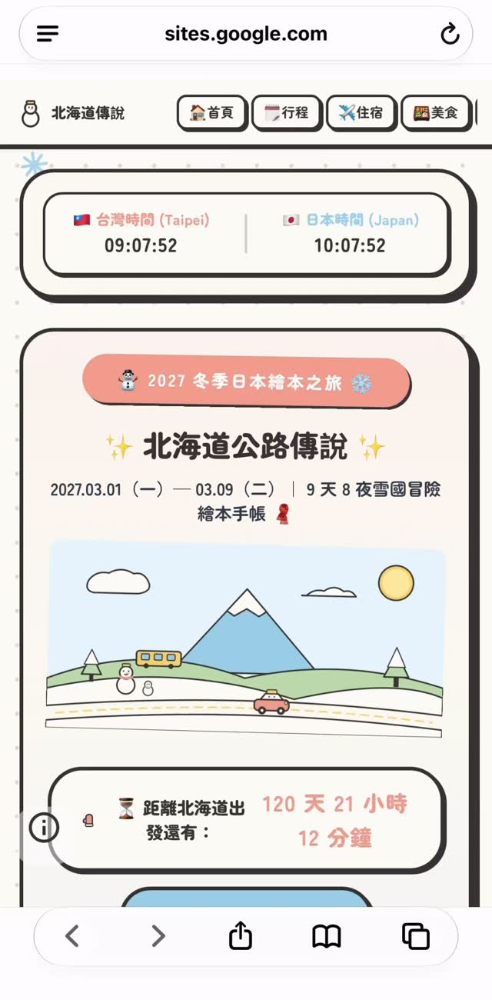

Threads｜用 Gemini 把行程資料做成單一 HTML 旅遊網站：可重用提示詞與功能驗收

一句話摘要
與其只問 AI「幫我做旅遊網站」，這則貼文提供一份可驗收的規格：將行程內容、視覺 token、功能清單與交付格式寫清楚，再把生成結果當成需要人工測試與修正的 HTML 原型。
Threads 可見內容：從備忘錄行程到專屬網站
Threads 作者 `yulan_tseng` 分享，自己原先有備忘錄版的北海道行程，後來參考其他使用者做法，將行程資料交給 Gemini 製作網站。作者表示自己有 Gemini 會員，完成過程花了兩天，並提醒不喜歡顏色時不必重新生成整個網站：可請 Gemini 修改 HTML 裡的 HEX 色碼，或自行搜尋指定色碼替換。
貼文可見的核心要求包括：
- 輸出為一個可直接下載、以瀏覽器開啟的單一 HTML 檔案。
- 手機優先、電腦也能正常顯示；全站使用繁體中文。
- 以日系繪本風格、和紙白背景、墨灰粗線框、圓角卡片與指定色票建立一致視覺。
- 使用自行繪製的 SVG 插圖，搭配目的地地標、交通、建築或自然元素。
- 提供固定導覽、倒數、航班卡、日期切換、每日時間軸、交通標籤、必去景點、可勾選待辦與住宿資訊。
- 動畫須保持輕微，且支援系統「減少動態效果」設定。
以上是作者公開貼文中的需求與實作經驗；不代表每個 Gemini 帳號、地區、方案或當下模型都必定能產生相同檔案品質與功能。
可直接複製的提示詞骨架
請根據我提供的旅遊行程資料，製作一個完整的旅遊行程網站，並輸出為單一 HTML 檔案，讓我可以直接下載並使用瀏覽器開啟。
網站風格採用日系繪本風格：可愛、溫暖、簡約；使用淺色系、和紙白背景、墨灰色粗線框與大圓角卡片。插圖請以 SVG 繪製，並依旅遊目的地加入地標、交通、特色建築及自然風景。請使用我提供的色票，避免漸層與單一色過度使用。
網站內容至少包括：頂端固定導覽、首頁主視覺與出發倒數、航班資訊卡、可切換日期的每日行程時間軸、交通方式標籤、必去景點、可勾選待辦、住宿資訊。插圖僅加入自然的輕微動態；切換日期加入柔和動畫，並支援系統減少動態效果。請以手機瀏覽為優先，電腦版亦需正常顯示，全站使用繁體中文。所有 HTML、CSS、JavaScript 必須整合於同一個 HTML 檔案；請交付可實際操作的完整網站，而非示意畫面。
【請在此貼上已核對的旅遊日期、交通、住宿、景點、預約與聯絡資料】
貼文另建議在基本版完成後，分次追加三種修改：改為冬季雪國氛圍、依每日所在地新增天氣與氣溫、同時顯示並即時更新台灣與日本時間。
要把「看起來能用」變成「旅行時可靠」：人工驗收清單
生成模型能協助起草介面與程式，但行程網站涉及日期、時區、交通、天氣與離線使用，應逐項人工核對：
- 行程資料：確認每一日日期、地點、營業時間、預約編號、交通路線與地址；不要將模型生成的資訊當作訂位或營運事實。
- 單檔交付：以沒有網路的瀏覽器實測開啟，確認 CSS、字型、SVG、圖片與互動沒有依賴未告知的外部資源。
- 動態資料：天氣與雙時區時計若依賴外部 API，須明確標示資料來源、更新時間、失敗備援與資料傳送範圍；不能只因畫面顯示就假設即時或正確。
- 手機操作：在實際手機測試日期切換、待辦儲存、長文字、橫向捲動、觸控目標與低網路情境。
- 可近用性：測試鍵盤操作、可讀文字對比、替代文字與系統減少動態效果；不要把動畫當成唯一提示方式。
- 發布與隱私：若網站包含機票、住宿、地址、同行者、電話或預約資料，先建立不含個資的公開版本；私人行程以本機或受控分享為宜。
Google 產品頁可確認與不能推論的部分
本次擷取可讀取 Gemini 官方入口與官方說明中心，但此處保存的「單一 HTML 網站提示詞、兩天完成、會員使用經驗與後續調色方式」皆源自社群作者，而非官方功能規格。
尤其是「可下載完整 HTML」、「即時天氣」與「準確行程資訊」各自涉及帳號介面、模型輸出、外部資料來源及使用者自行測試。不同方案、地區、版本或服務條款可能改變可用性；正式行程決策仍應回到航空公司、交通業者、住宿方與氣象來源核對。
來源、素材與限制
- 原始分享 URL 與解析後 canonical Threads URL 已保留。
- 以貼文公開載入的影片首幀作為來源證據，本地副本為 JPEG、640 × 1300、65,861 bytes、SHA-256 `3fabd074ca9795cad668c021289651130c9c500542d90127d79cf70eeb7e06dc`。
- 首幀與貼文可見文字用於保存需求脈絡；未下載完整影片，亦未測試、下載或執行任何生成的 HTML 檔案。
- 貼文中的瀏覽與互動數為擷取時觀察值，未作為長期指標。
原始連結
- Threads 貼文：https://www.threads.com/@yulan_tseng/post/DfJA_vjCXTf
- Gemini：https://gemini.google.com/
- Gemini 說明中心：https://support.google.com/gemini/